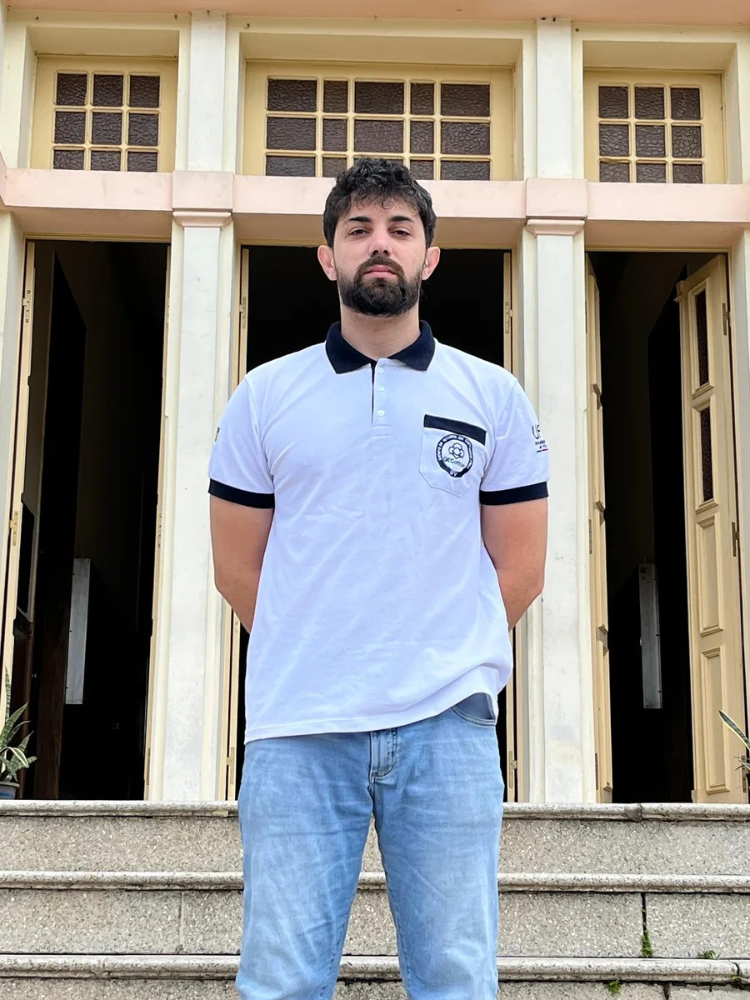

DIGITAL RESUME
Arleu Júnior
Junior Backend Developer · Python, FastAPI, SQL, and PostgreSQL
Professional Summary
Early-career developer focused on backend development and data. Practical experience with Python, FastAPI, SQLAlchemy, REST APIs, PostgreSQL, SQL, Docker, automated testing, Git, and CI/CD. I also work with asynchronous processing and use Redis, Celery, JWT, PostGIS, JavaScript, TypeScript, Vue, and React. Final-year Agronomy student at UFV, with experience in corporate routines, protocols, traceability, and operational records.
Professional Experience
Pif Paf Alimentos
Poultry Production Intern
- Worked alongside the technical field team in daily broiler production routines, monitoring biosecurity, housing preparation and flock conditions.
- Supported biological sampling, field necropsies and pre-slaughter visual assessments under established operational protocols.
- Participated in technical meetings, training sessions and time-sensitive production routines.
- Observed recurring challenges involving operational records, traceability and the organization of field information.
ADWA Cannabis
Field Operations Intern
- Recorded environmental and crop variables in protected cultivation and nursery environments.
- Supported propagation, fertilization, phytosanitary management, harvest and post-harvest activities.
- Organized operational records for traceability and recurring production routines.
- Assisted with data collection for applied agronomic research.
GeCotton · UFV
Technical Events Assistant
- Supports technical and scientific events related to cotton, machinery and technology transfer.
- Developed Nomino to automate certificate generation from spreadsheet records.
- Collaborates on technical materials and activities involving researchers, producers and companies.
BraIN and Phy Lab · UFV
Laboratory Intern
- Maintained insect colonies and supported bioinsecticide trials.
- Organized experimental records and assisted with result interpretation.
Selected Projects
AgriSentry Cotton
Platform with an asynchronous REST API, JWT authentication, organization-based context, background processing, and a catalog workflow covering validation, normalization, deduplication, review, and publication.
Python · FastAPI · PostgreSQL/PostGIS · Redis · Celery · Docker · Vue 3 · TypeScriptRefEngine
Local application for PDF, RIS, and BibTeX ingestion, OCR, field validation, PATCH-based review, and reference export according to UFV standards.
Python · FastAPI · React · SQLite · Pytest · OpenAPItccBuilder
Local application for filling, validating, and generating undergraduate thesis sections from the template used by UFV.
React · Node.js · JavaScriptAgriSentry IoT Gateway
Asynchronous gateway for MQTT and HTTP REST telemetry ingestion, PostgreSQL persistence, and integration with FastAPI services.
Rust · Actix Web · SQLx · PostgreSQL · MQTT · DockerDevGuard Core
Command-line tool for detecting credentials and tokens through regular expressions and entropy analysis, with pre-commit support and JSON reports.
Rust · Regex · Serde · Git Hooks · CI/CD